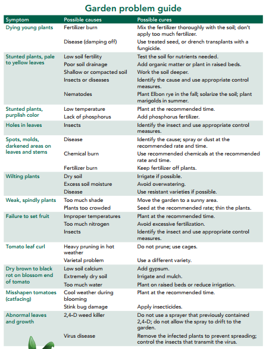

Problems
Expect insect and disease problems. When they appear, the first step is to identify the cause correctly. For help in identifying insect damage and disease symptoms, refer to publications in Extension’s Easy Gardening series (http://agrilifebookstore.org).
To produce a good yield, protect the plants much as possible. Many pesticides can help protect vegetables from insects and diseases. Before buying, read the product label carefully to make sure it is the right one for your intended use. Always follow the label directions carefully.
Other techniques do not use pesticides; they protect the plants before they are damaged. One method is to protect the plants with covers that keep insects away. Insects damage plants by feeding on them, and some insects—including aphids, whiteflies, thrips, and leaf-feeding beetles—also transmit diseases. Although it is impossible to keep insects away from plants entirely, plant covers can help.
Covers can be of clear plastic or a translucent, fabric-like material known as row cover or spunweb. Covers can be used on row crops but are easiest to use on plants that are caged, such as tomatoes and peppers. Install the cages around young transplants and cover them to the ground with the plant covers. Anchor the covers securely in the soil.
Because heat can build up under plastic covering, ventilate it during the day if temperatures are in the high 70s or more. Ventilate the cages by opening the top and raising the plastic 4 to 6 inches off the ground at the bottom. The cover will still protect the plants because most insects do not enter from the top.
On cold nights, close the covers. Remove plastic covering entirely when the foliage begins to touch the edges and bunch against the sides of plastic. For tomatoes, this will usually be about the time the plant has marble-sized fruit.
Plants covered with spunweb never need to be uncovered. Spunweb will not overheat plants because the temperature inside the material is about 15°F cooler than the outside temperature. Used in the fall, spunweb also gives plants some shading from the hot sun.
However, spunweb does not provide as much cold protection as plastic, so each cage will have to be artificially heated (such as with Christmas lights) if temperatures fall below freezing.
Cover can also protect the plants from wind. Winds as low as 15 mph can significantly slow plant growth, delay harvest, and decrease yields.
You may wonder if plants will set fruit when covered with plastic or spunweb, since no bees or other insects are able to enter. It’s not a problem for tomatoes, peppers, and eggplants, which are 85 percent self-pollinated; that is, they don’t need insect pollination to set fruit.
To ensure adequate pollination for other vegetables, shake the covered cages vigorously every day after bloom begins, or thump the bloom clusters daily with your finger. You can also artificially set early blooms by spraying bloom clusters with a plant hormone spray such as Blossom-Set®. The resulting fruit will have fewer seeds.
Spunweb will protect seedlings from birds and other pests, and cole crops (such as broccoli and cabbage) from leaf-eating caterpillars. You can also use spunweb to “vine ripen” fruit.
Nematodes are a common garden problem. They can severely damage all crops except corn, garlic, onions, and nematode-resistant tomatoes. The symptoms of nematode damage above ground are like those of many other root diseases or of environmental problems such as inadequate water or nutrient deficiency: The plants look wilted or stunted, have chlorotic or pale green leaves, and yield less produce.
The most characteristic symptoms of nematode damage are underground. Infected roots will swell and form knots or galls. Fast-growing annuals will have large, fleshy galls; woody perennials will have small, hard galls. Infected tubers, corms, or other edible roots will have small swellings or pimpling on the surface.
There are several ways to combat nematodes. For a spring garden, plant cereal rye (Elbon) in the fall.
For fall gardens, solarize or pasteurize the soil in July by tilling it well and watering until it is very moist; then cover the soil with clear plastic. Seal the edges and leave the plastic in place for at least a month. Do not use black plastic because the soil will not heat up enough to destroy the nematodes. Solarization also helps control fungi and weeds.
In areas heavily infested with nematodes, plant marigolds in the garden area in August. Marigold roots release a substance that is toxic to nematodes. Plant marigolds 12 inches apart and allow them to grow until the fall planting of cole crops (such as broccoli, cabbage, cauliflower, kale, mustard, and turnips) begins in October. Then remove the tops of the marigolds and till their roots into the soil.
Many gardeners avoid planting marigolds because they attract spider mites to the garden. However, the spider mites will be virtually eliminated when the garden is tilled in August for planting with marigolds. Because mite populations decline as the weather cools in the fall, they will not have time to increase to damaging numbers when the fall garden crops are growing.